← 返回阅读库 · 原论文目录
论文讲解阅读文档 · 机器人学 · v136
NeRF-RL Reinforcement Learning with Neural Radiance Fields[2206.01634]
视频时长 00:10:12；讲解文字 4,912 字符；提取讲解画面 37 张。按视频原顺序阅读，每段文字保留时间戳。
文字来自整段视频的自动语音转写，按自然停顿分段，并与 PPT / 论文页面 / 演示画面对齐。未将讲解压缩为摘要；术语、数字和口述公式请结合画面及原论文核对。 阅读稿已校正规范部分明确术语误识别；原始逐字稿和每处修改记录另行保留。
讲解画面为源视频截图（640×360），不是可编辑 PPT 文件。全片按每秒 2 帧扫描内容变化，逐步展开页保留；连续动画保留代表画面。清晰度受源视频限制。
下载完整资料包 · 含离线 HTML、PDF、Word、全部 PPT 画面和字幕。
原论文与材料
Reinforcement Learning with Neural Radiance Fields · 下载完整 PDF（23 页）
按时间阅读
00:00:00–00:00:25 · 画面 001
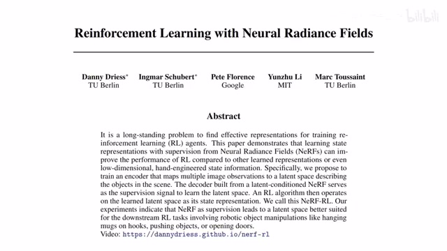
00:00:00–00:00:25 · 画面 001大家好啊，今天我们来快速说一篇论文，Reinforcement Learning with Neural Radiance Fields，就是这个 nerf。那像这个 NERF 呢之前我们的视频里面呢，已经介绍过了那今天这篇文章呢，就是用这个 NERF作为一种自监督或者叫无监督的这种手段，用它学出一个好的，这个 Visual Representation 来然后呢放到我们的这个Reinforcement Learning 里面用它呢来帮助我们学到一个，更好的 Policy那具体来看
首先呢
00:00:25–00:02:25 · 画面 002
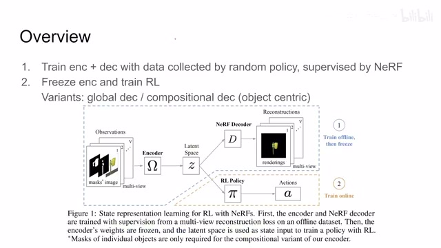
00:00:25–00:02:25 · 画面 002在这个流程上本文就是一个很经典的先做 Pre-training再做这个 Policy Learning 的一个过程那这里呢作者重点要强调的就是，NERF 这个东西呢它本身就是一个一个很好的处理多视角的无监督的这么一个工具，你想它的 Loss本身的构成就是一个重建的这个一个 Loss 嘛对吧所以呢它是一个无监督的，而通过这样框架来，构建出的这个 Representation或者叫这个 Latent它对我们这个后面的 Policy 呢是非常有好处那总的来说呢它的这个流程呢跟我们看到的其他的，
有 Pre-training 的这个流程的这个 Reinforcement Learning 的方法呢都是一样的那就是先把我们的，这个 Encoder用这个无监督自监督的这种 Loss给它训练一下然后呢再做这个 Policy Learning但是这里呢我们要注意两点一个就是你再从这个pretrain 转到这个 online learning 的时候，这种 offline 转到 online 的时候呢，一般来说呢，你会把这个 encoder 给它定住，就是前面这个 encoder 呢，就不再更新了。一般来讲呢，这样做的性能呢，会比你随着这个 online training 再更新这个 encoder 啊，性能还要好一点，一般是这样的。然后第二点呢，就是在这篇论文当中呢，它一开始用来做 pretrain 的数据啊，它是用一个随机的策略，
去在环境中收集的它并没有说是借助的额外的数据集并没有说比如说用的 ImageNet 什么这些东西并没有它就是一个随机的这个 policy 去在这个环境中收集的那么当然这也就意味着比如说在环境中有一些你只有玩到一定阶段取得一定的 reward 之后才能出现的一个这个物体或者是什么样的一个东西，就是你一开始在用随机的策略去收集的时候见不到的这种物体啊，那这个时候呢就会比较难办一点。那么当然呢，在这里呢，作者通过对这个测试环境的设计呢，他自己规避了这个问题。好的，那么下面我们就来看作者怎么样把它这个 nerf 这个框架来放到我们的这个 reinforcement learning 里面，
那么整体来说呢，它是一个 encoder 加 decoder 的一个构型，那么 encoder 呢，把这些多个视角的这个图像变成到这个 latent representation，然后呢，再通过这个 nerf 这个 decoder 把它再变回原来的这些图像。那么通过测量这个重建的图像跟原始的输入图像的误差就可以把这个网络给它训练出来。那本质上是一个跟 autoencoder 一样的这么一个东西。那么但是具体的实质上呢，这里呢，作者分别在这个 encoder 和 decoder 讨论两种情况，
00:02:25–00:02:40 · 画面 003
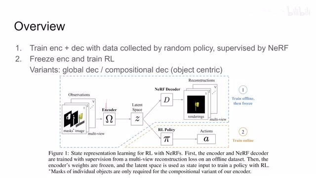
00:02:25–00:02:40 · 画面 00300:02:40–00:02:41 · 画面 004
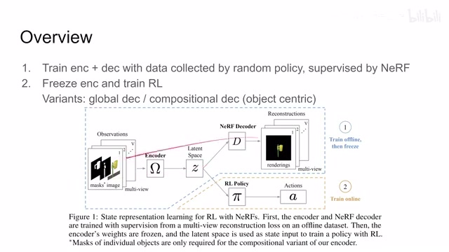
00:02:40–00:02:41 · 画面 00400:02:41–00:03:12 · 画面 005
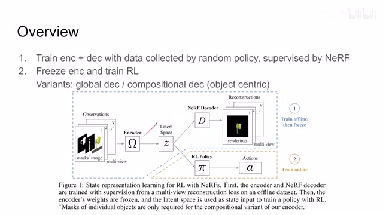
00:02:41–00:03:12 · 画面 005对于这个 Decoder 来说呢,它分两种情况,一种叫做这个 Global Decoder,一种叫做 Compositional Decoder,或者按照我的理解就是 Object Centric,那它的意思就是说呢,我的这个 Latent Space 是整个一个场景,整个一个画面,全用,共用一个 Latent Space,还是说我的场景中的每一个物体,它都有一段自己的 Latent Space,那这是两种不同的设计,那当然对于 Decoder 来说呢,也有两种不同的设计,我们到后面这个部分再来详细的介绍。
00:03:12–00:03:19 · 画面 006
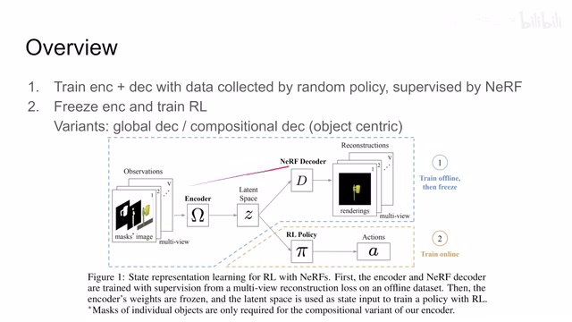
00:03:12–00:03:19 · 画面 00600:03:19–00:03:57 · 画面 007
00:03:19–00:03:57 · 画面 007好的，那么下面我们就来具体看一下他的这个整个的问题的这个定义或者说是他的一些字母的表示啊。首先对于我们的输入来说，这 observation 他需要什么呢？你想 nerf 需要什么对不对？需要多视角的图像啊，这里然后呢，需要每个相机的这个参数，就是相机所在的位置啊，这个相机的矩阵。那么同时呢，因为他有考虑到啊，我要针对每一个这个物体每个 object，去做这个 representation，所以呢，他这里也有一个 mask，也就是说我的这个环境中啊，哪个部分是物体，哪个部分是背景，有这样一个 mask 啊。在这里这就是他的一个标准的定义的这个问题的输入啊，这个 v 呢就是我有没有 v 个视角吗？
00:03:57–00:03:58 · 画面 008
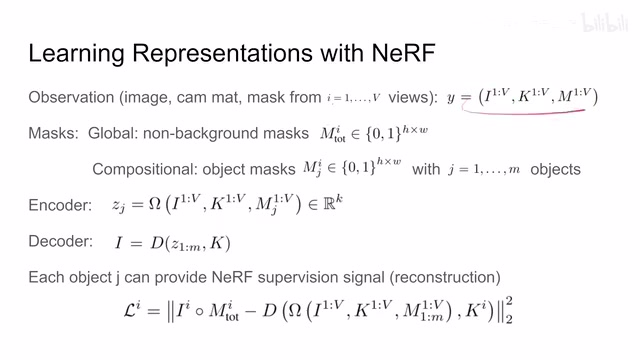
00:03:57–00:03:58 · 画面 00800:03:58–00:04:33 · 画面 009
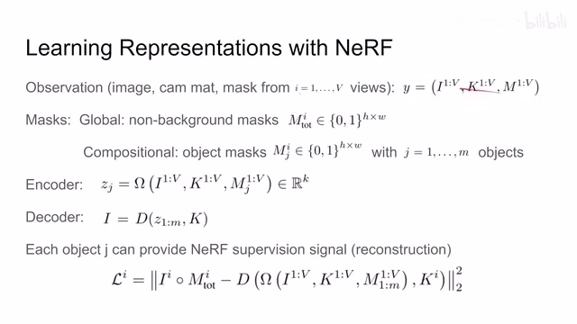
00:03:58–00:04:33 · 画面 009那么具体来到这个 mask，因为我们之前说了 decode 有两种情况，一种叫做 global，另一种叫做 compositional。所以 global 这种只只有一个 mask，就是你来区分这个东西是前景的物体还是背景就足够了，对于每一个视角来说都只有一个 mask 就够了。而对于 compositional 它要区分每一个物体，所以你看到它的这个 mask 这个 j 代表着是每一个物体的 mask，这个 i 代表视角，对吧，它就要比这个 global 呢有更多的信息在里面。那这个呢是这个 mask 的部分。那么介绍完了输入，然后就开始送了送到 encoder 里面。那 encoder 呢，这里就用一个 omega 来表示，encoder 呢把我们所有的这些输入变成了一个这个长度为 k 的这么一个
00:04:33–00:04:35 · 画面 010
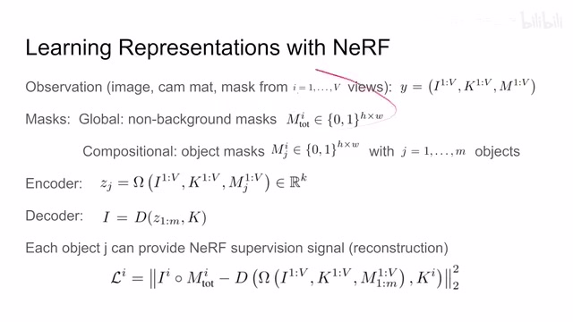
00:04:33–00:04:35 · 画面 01000:04:35–00:04:39 · 画面 011
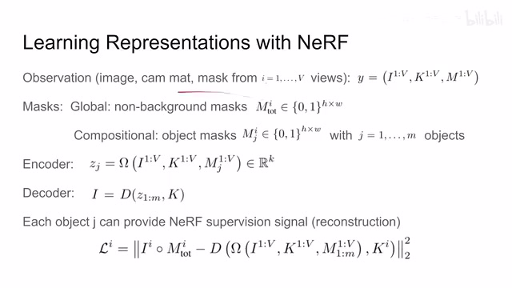
00:04:35–00:04:39 · 画面 01100:04:39–00:04:46 · 画面 012
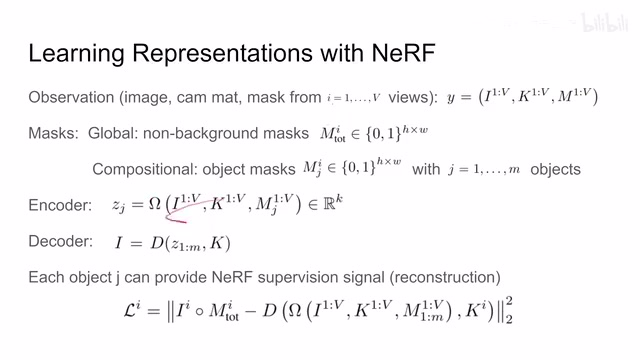
00:04:39–00:04:46 · 画面 012那注意这里这个 j 对吧，j 是跟我们的物体保定的，也就是说，对 compositional 的情况下，我们的每一个这个物体，它都会有一个这个 encoder，一个这个 z。对于这种 global 的情况下呢，它就只有一个这个 z 了。那对于 decoder 来说呢，它就把这个 latent representation 带上，把我们的这个 camera matrix 带上，然后呢，用那儿把我们的图像给解出来。那么特别，那么特别注意的是，在 global 的情况下呢，我们想要重建出
00:04:46–00:05:04 · 画面 013
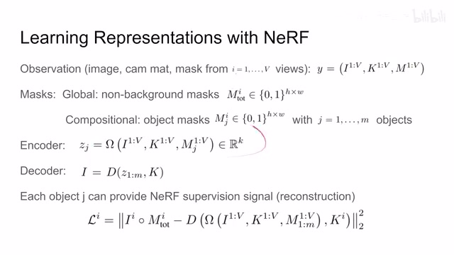
00:04:46–00:05:04 · 画面 01300:05:04–00:05:09 · 画面 014
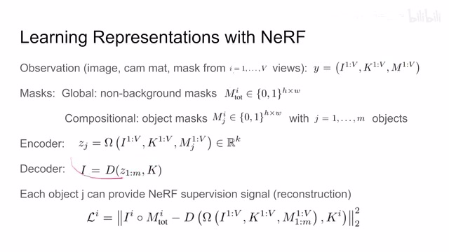
00:05:04–00:05:09 · 画面 01400:05:09–00:05:28 · 画面 015
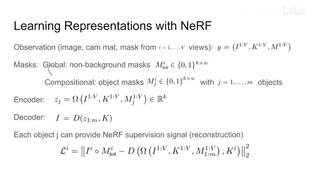
00:05:09–00:05:28 · 画面 015整个完整的图像。而对于这个 composition 的情况下呢，那我希望前面这个 latent 对吧，它因为是跟这个特定的物体所绑定的，所以它重建出来的结果呢，只要跟它输入的那个物体相近就可以了，其他的部分呢我们也不在意。那么在这种原则的情况下呢，我们就可以把这个整个这个训练的信号或者叫 loss 呢，就给它写出来了。你可以看到呢，它的 ground truth 是什么，我们输入的一整张图像
00:05:28–00:05:29 · 画面 016
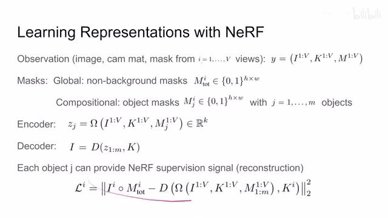
00:05:28–00:05:29 · 画面 01600:05:29–00:05:50 · 画面 017
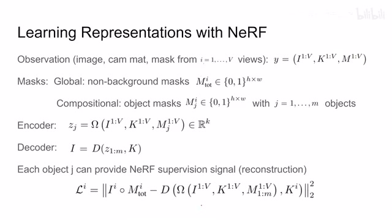
00:05:29–00:05:50 · 画面 017乘上这个前景的 mask，就是我不重建背景啊，我只关心前景的质量。这是我们的这个 ground truth。那减去的这个 decoder 里面套着这个 encoder，这是一个 autoencoder 这么一个结构嘛，就是我们生成图像的一个流程嘛。所以它是一个 reconstruction 的过程嘛，对吧。那这个是它的 loss 呢，就这么写
00:05:50–00:05:51 · 画面 018
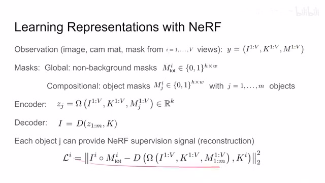
00:05:50–00:05:51 · 画面 01800:05:51–00:06:17 · 画面 019
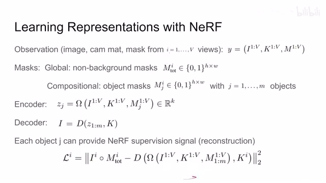
00:05:51–00:06:17 · 画面 019但是在这里有朋友就指出了，我们这个 nerf 它是虽然是有多视角对吧，但是它解决的应该是一个固定的场景，就是场景里面物体都不动对吧，单一的一个场景这样一个问题。你现在作为一个 reinforcement learning 的角度来讲，你肯定的场景的状态要不断的变化。那在这种情况下，你的这个 nerf 怎么能够处理这样的事情呢
00:06:17–00:07:42 · 画面 020
00:06:17–00:07:42 · 画面 020那么这个担忧呢，是非常正确的对吧，因为传统的 nerf 呢，它就是学一个固定的场景。那当然对于解决的方法呢，这里作者用一个很直接的方法就是 condition 的啊，就是把我们跟场景相关的 representation 啊，作为这个条件的一个输入。就相当于我们这个 nerf 的网络呢，不仅包含有这些啊，用于渲染的这些输入，同时呢，它还包含有这个场景的这个条件啊。这个场景条件这个 z 呢，就是前面这个 encoder 给出的。那具体来看呢，那对于 global 的情况呢，就是 condition on z，它就是我们整个场景的这个 representation
那我们希望这个 representation 呢，能够包含这个场景的各种变化等等等等。确切来说呢，就是描述这个当前的这个状态。那对于 compositional 的配置呢，那这种情况下呢，我们的每一个物体它都会有一个 representation然后作者对于每一个物体它都有一个 nerf 的网络，就是 fj，这就是物体的 index。然后它是 condition on zj，也就是根据自己的 latent code 的变化来只重建自己的这一个物体就好了。现在我们分别各自把各个物体重建出来之后，我们要组成一张完整的图像，完整的图像你也好解决，就是你在做渲染的时候你去每一个网络里面查一查对吧。你比如说现在想渲染
空间中的某一个位置，这个位置是不是在第一个物体里面，是不是在第二个物体里面。那这样操作下来呢，很简单的就把我们几个分别的这个网络给它又合成了一张图像了。同时呢，这个过程嘛，对吧，就一个求和的过程，它也是可以差分的。那么这个是两种辨识下不同的设计的这个区别，本质上呢，都是一个东西。那么到这里呢，Decoder 的这个各种变化呢，就已经
00:07:42–00:07:43 · 画面 021
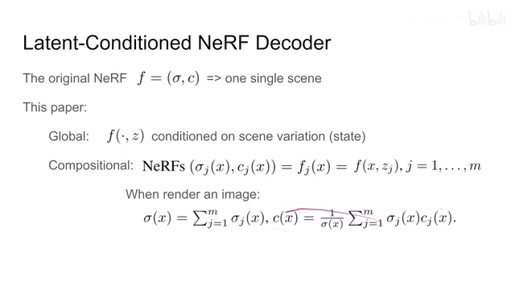
00:07:42–00:07:43 · 画面 02100:07:43–00:07:50 · 画面 022
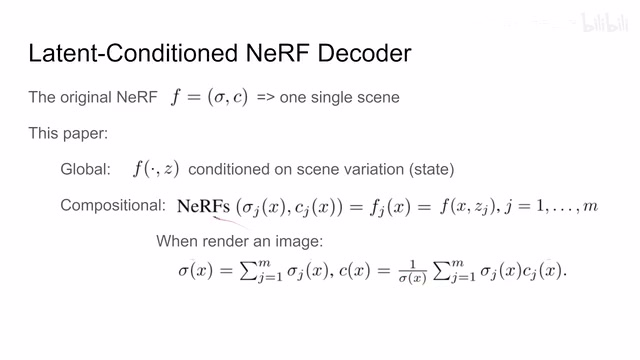
00:07:43–00:07:50 · 画面 02200:07:50–00:07:52 · 画面 023
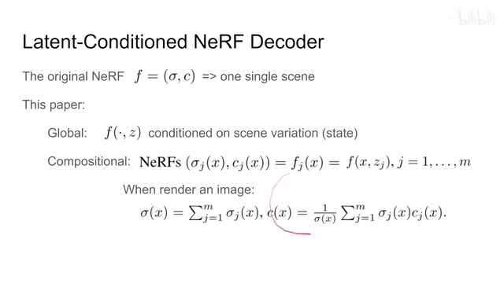
00:07:50–00:07:52 · 画面 02300:07:52–00:07:56 · 画面 024
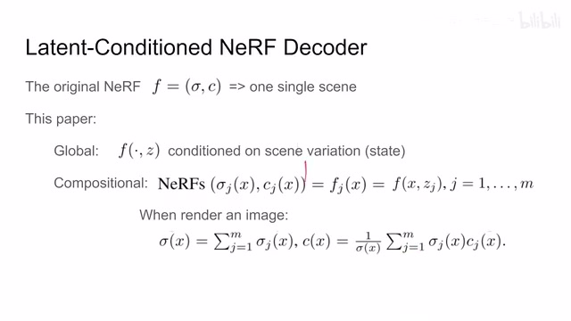
00:07:52–00:07:56 · 画面 02400:07:56–00:07:57 · 画面 025
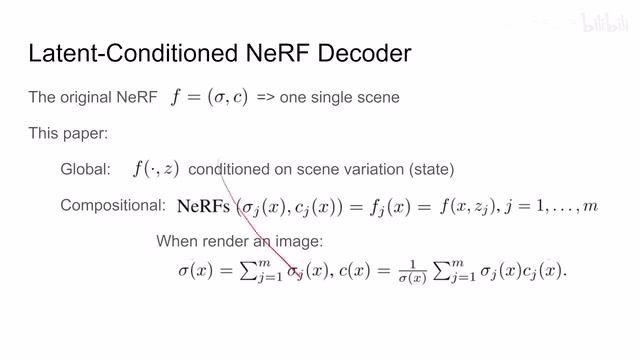
00:07:56–00:07:57 · 画面 02500:07:57–00:08:01 · 画面 026
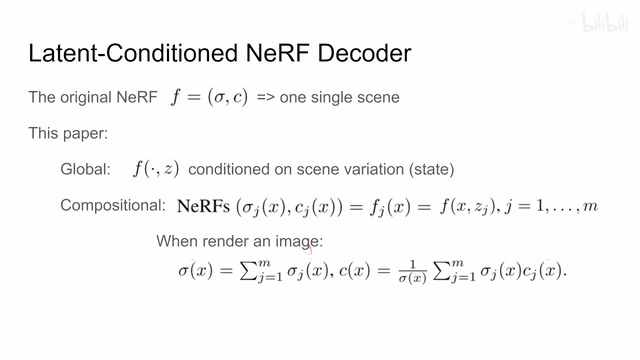
00:07:57–00:08:01 · 画面 026结束了。我们再看作者还设计了不同的 EncoderEncoder 它有两种不同的变化。首先第一种就是我们最能够直接想到的，因为虽然你是多视角的图像，多视角但是每一张图像它还是一张二维的图像对不对，你把二维的图像送到这里，作者用了一个 ResNet18
00:08:01–00:08:13 · 画面 027
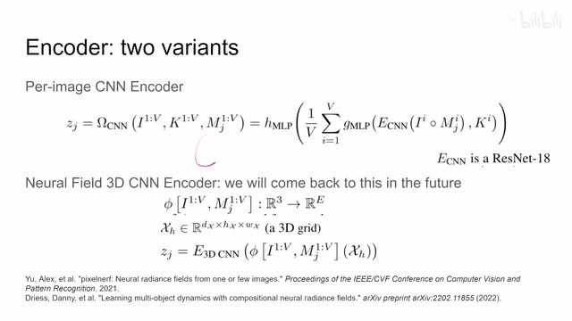
00:08:01–00:08:13 · 画面 02700:08:13–00:08:14 · 画面 028
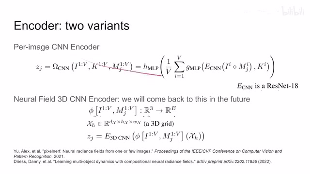
00:08:13–00:08:14 · 画面 02800:08:14–00:08:27 · 画面 029
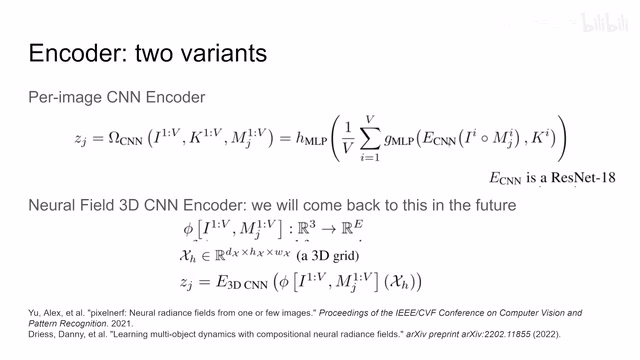
00:08:14–00:08:27 · 画面 029把它送到 ResNet 里面，然后过 MLP 得到一个 Representation，这是一个视角的。你现在有一个视角对吧？求个平均，再送到 MLP 里面。那么这个就是作者怎么样从多个视图里面提取出一个特定物体的 Representation。那么还是，如果你是 Global 的配置，你全程就只用提出一个；你如果是 Compositional 的配置，你每一个物体都要提出一个 Zj 来。那么这个配置就是一个很 naive，很 vanilla 的这样一个很朴素的这么一个配置。
00:08:27–00:08:28 · 画面 030
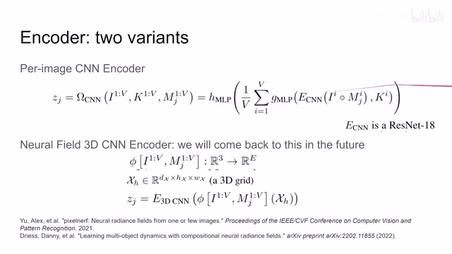
00:08:27–00:08:28 · 画面 03000:08:28–00:08:40 · 画面 031
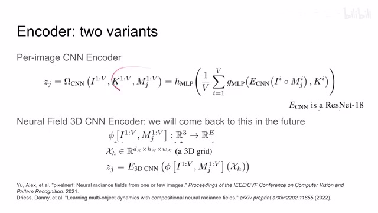
00:08:28–00:08:40 · 画面 03100:08:40–00:08:41 · 画面 032
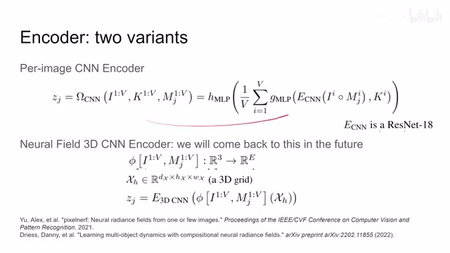
00:08:40–00:08:41 · 画面 03200:08:41–00:09:03 · 画面 033
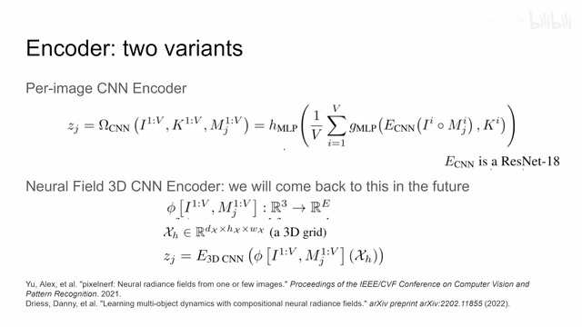
00:08:41–00:09:03 · 画面 033那么此外，作者还尝试了一个 3D encoder。这个等我们把这些相关的文章聊完之后，这个设计就是比较直观的。现在我们只需要知道它是一个 3D 的 CNN，跟这个用法不一样，它能够包含这个 3D 的信息就可以了。好的，那么以上就是本文主要的一个技术路线了，并没有什么特别困难的地方。那下面我们直接来看作者汇报的结果。那这里呢，你可以看到它的不同的配置对吧？是 compositional 的配置还是 global 的配置？那我们使用的这个 encoder 是什么样的？刚刚我们介绍了两种 encoder 的辨识啊。然后呢，最终使用的 loss，同时呢，一些 base line，我的这个 unsupervised learning，我的这个 nerf 这个部分能不能换成其他的东西对吧？
00:09:03–00:09:04 · 画面 034
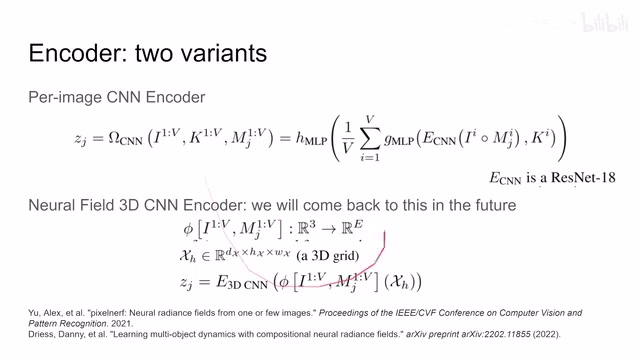
00:09:03–00:09:04 · 画面 03400:09:04–00:09:08 · 画面 035
00:09:04–00:09:08 · 画面 03500:09:08–00:10:12 · 画面 036
00:09:08–00:10:12 · 画面 036还有直接用 reinforcement learning 的效果如何对不对？那感兴趣的朋友呢，可以到他原文中查看他的这个具体的配置。然后呢，这里作者测试了这个三个环境都是他自己搞的这么三个环境。取得了相应的好的结果。那总的来说呢，他能做成什么样复杂的事情反而倒并不是主要的。那重点呢，是他向我们证明了这个 nerf 同样可以作为这个 self-supervised learningunsupervised learning 这种无监督的这种方式呢，来帮我们学到一个好的这个 visual representation。这个呢，是这个本文需要 argue 的点。
好的，那么以上就是我对这个文章的一个快速的一个梳理。那么还是非常推荐感兴趣的朋友到他原文中查看他大量的实验，具体的实验细节等等。那么感谢您的收看，再见。
00:10:12–00:10:12 · 画面 037
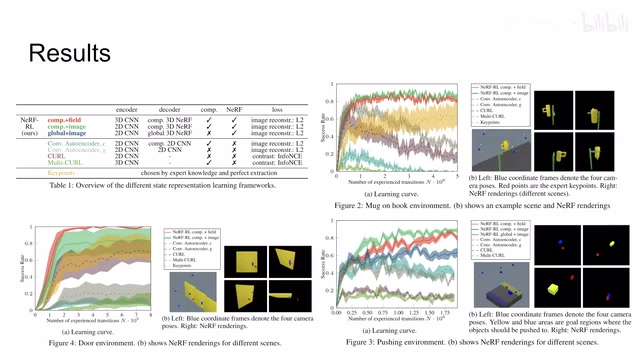
00:10:12–00:10:12 · 画面 037转写与来源说明 · 4 个自动复核提示
保留 87 个原始语音片段，4 个片段触发自动复核提示。提示仅用于定位可能的术语、重复或识别问题，不等于已确认错误。
讲解画面为源视频截图（640×360），不是可编辑 PPT 文件。全片按每秒 2 帧扫描内容变化，逐步展开页保留；连续动画保留代表画面。清晰度受源视频限制。
原视频：paper/合集_2026-10-16_机器人学/[论文速览]NeRF-RL Reinforcement Learning with Neural Radiance Fields[2206.01634].mp4
SHA-256：5f596d3712bfd37c91eefb7ffb11f94b7c538278140c00fe368fa199040fe362
这个 Visual Representation 来
Reinforcement Learning 里面
构建出的这个 Representation
再做这个 Policy Learning
全文按视频语音与画面制作。原论文可从上方链接下载；完整资料包保留全文、原始逐字稿、字幕和校对记录。